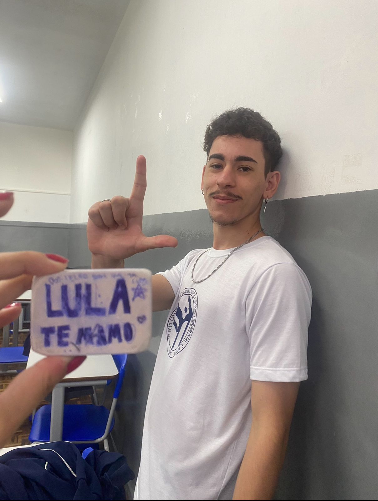
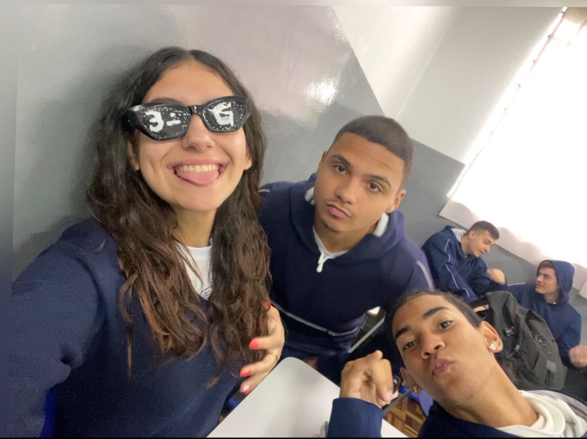
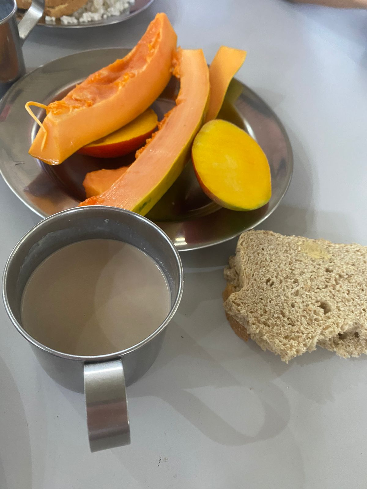
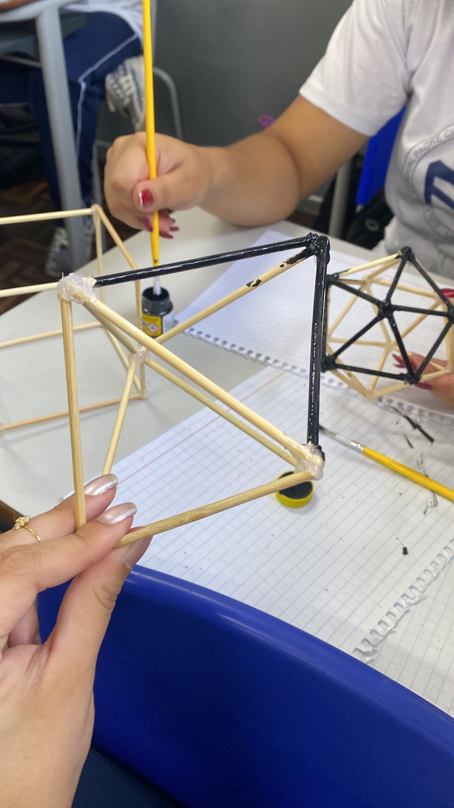
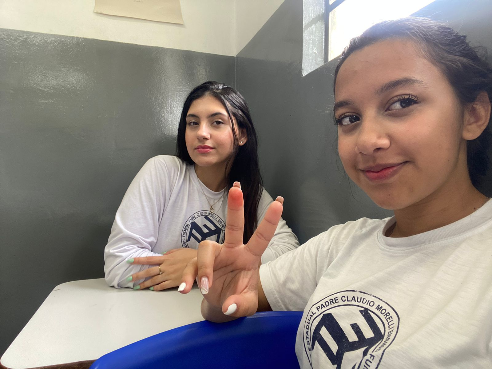
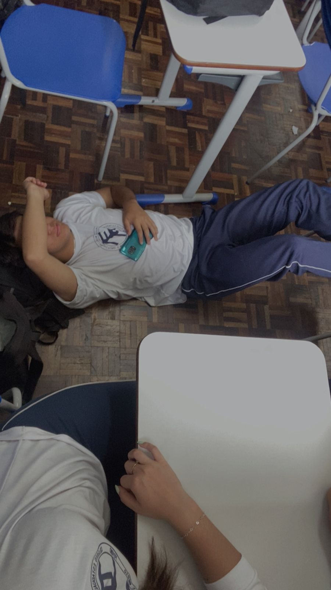
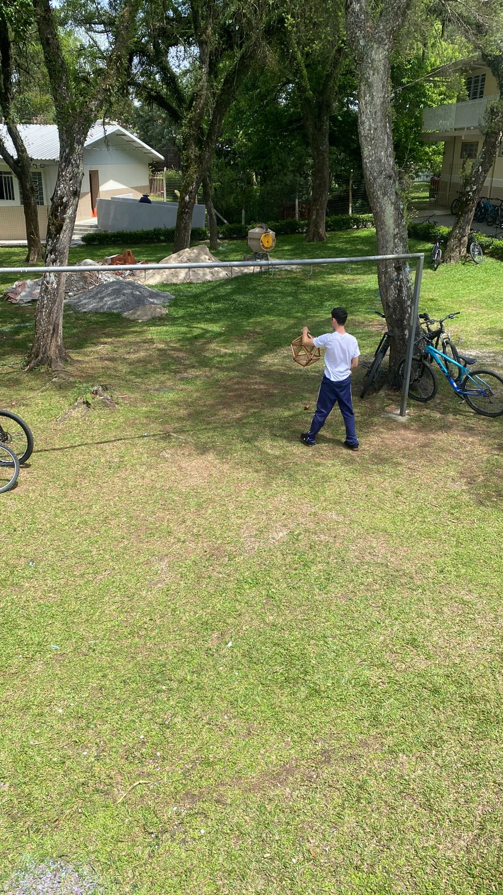
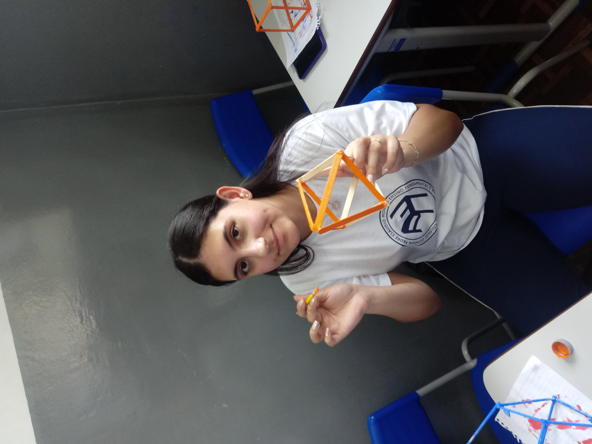

1º Ano do Ensino Médio
Chegada ao Colégio Padre Cláudio Morelli
Então, eu me mudei de São José e, claro, mudei de colégio também. Acabei caindo no Morelli, porque a outra opção era um colégio cívico-militar, e isso não tinha nada a ver comigo, né? Nos primeiros dias de aula, eu acabei faltando e perdi aquele início de ano cheio de apresentações. Mas, no fundo, sabia que ia dar conta de me enturmar depois.
Formando Amizades
No meio dessa galera nova, conheci o Nathã. Ele era bem diferente de mim, mais na dele, mas tinha algo especial na nossa conexão. Eu fui me aproximando dele e, olha, uma amizade começou.
Primeiro Contato e Descobertas em Comum
O nosso primeiro contato foi bem engraçado: durante um trabalho em grupo, sem nem pensar, perguntei pro Nathã se ele era gay. Ele, na maior tranquilidade, respondeu que era pansexual, assim como eu! Daí, pronto, o gelo estava quebrado e a amizade estava lá.
Com o tempo, a gente foi descobrindo que tínhamos muito mais em comum do que pensávamos. Falávamos sobre livros, rolavam umas conversas profundas sobre a existência de Deus e até começamos a questionar o capitalismo juntos. Essas trocas não só nos uniram, mas também ajudaram a gente a crescer e a entender melhor quem somos individualmente.
Foto da época que bozo foi por água a baixo(Nathã votou nele, PETISTA)
2º Ano do Ensino Médio
A Rotina e o Crescimento
No segundo ano, não tivemos acontecimentos marcantes dentro da escola. A rotina foi mais tranquila, mas isso não significa que não crescemos. Eu e Nathã nos tornamos ainda mais próximos, sempre trocando ideias e fortalecendo nossas convicções políticas.
Um evento que chamou atenção foi a saída de uma pessoa do nosso grupo, o que nos fez refletir sobre nossas amizades. Apesar da falta de grandes eventos, esse período foi fundamental para firmar nossas identidades e ideologias.
3º Ano do Ensino Médio
O fim
Este foi um ano em que aconteceu varias coisas(ou talvel eu só to com a memoria mais fresca), tivemos muitos trabalhos este ano, conhecemos professores(as) novos que foram incriveis, mas também perdemos, minhas relações ficaram estranhas com algumas pessoas por algum tempo, mas espero que no fim essas pessoas tomem vergonha na cara e façam algo
      